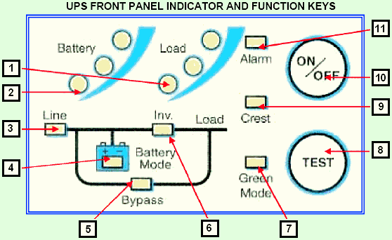
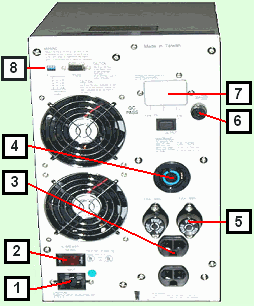
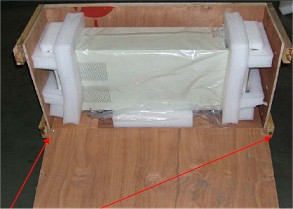

This procedure provides instructions for installing and connecting the ABCDEF3000 Uninterruptible Power Supply (UPS) to the DxI instrument.
Figure 291: UPS front panel

1
Load: Load level (>25%, >50%, >75%)
2
Battery: Battery status (>Cutoff, >Low, >Full)
3
Line: AC power present (This LED may flash when using 208 or 240 V AC, because a neutral connection may not be present)
4
Battery Mode: Battery in use
5
Bypass: Battery and inverter are bypassed (Alarm + Bypass = Internal Fault)
6
Inv: Inverter is Ok and powering the connected load
7
Green Mode: If the load <10% and SW3 is down, then the inverter is bypassed and no backup is provided
8
Test: Press the test button:
With Line AC present - to self test.
In Green Mode - to disable green mode.
In Battery Mode - to disable/enable the audible alarm.
9
Crest: The connected load is too high
10
On/Off: Battery backup On/Off (This does not power down the UPS)
If the rear circuit breaker is Off or there is no AC, then press On/Off to start or stop the UPS battery backup.
If the rear circuit breaker is On and there is AC, then press On/Off to set the UPS to Bypass (No battery backup).
To power down the UPS: Switch the rear circuit breaker to Off (battery backup starts), Press and hold On/Off for ~30 seconds until the UPS beeps (battery backup stopped).
11
Alarm: Fault detected. Refer to the UPS manual for details
Figure 292: UPS rear panel

1
Line cord inlet
2
Main power switch / circuit breaker
3
120 V AC outlets (5-15R). The console PC and monitor can connect here.
4
240 V AC outlet (L6-20R). The DxI power cord connects here.
5
Outlet fuses (20 A x 2)
6
Battery fuse (30 A x 1)
7
External battery connector cover
8
Dip switch, for output voltage configuration
Unpack the ABCDEF3000 UPS.
Remove the eight screws holding the top panel to the crate.
Detailed unpacking and setup instructions are located inside the crate.
Remove the eight screws holding the side panel to the crate.
The opposite side of the crate is nailed into place.
Roll the UPS out of the crate.
Use the removed side panel as a ramp. The two removed screws can be used to hold the side panel/ramp in place.

Remove the packing materials from the UPS.
Install the battery (30 A x 1) and output fuses (20 A x 2) into the holders in the rear of the UPS.
The fuses are located in the bag attached to the UPS rear.
Install the UPS.
Position the UPS in the intended location and connect the power cord to the wall outlet.
Power on the main power switch located on the UPS rear panel.
Note: The unit beeps and the lights on the front panel flash momentarily while the unit performs self-tests.
Connect the DxI instrument to the UPS.
Note: Do not connect the laser printer to the UPS. The warm-up period of the printer before printing can cause the UPS to beep because of an overload signal.
Note: The UPS internal batteries charge while the unit operates. An initial charge time of 24 hours is necessary to obtain maximum performance before the UPS is used for battery backup.
Power on the DxI system and confirm that it operates when powered through the UPS.
Confirm that the status indicators on the front panel of the ABCDEF3000 UPS are normal.
Verify the proper operation of the ABCDEF3000 UPS, after the UPS has been powered on and allowed to charge for 24 hours.
Set the UPS rear circuit breaker to off, and confirm that the DxI operates when powered by the battery backup.
The manufacturer recommends an initial charge time of 24 hours to ensure proper battery performance before the UPS is used for battery backup.
Note: The AC Line indicator LED will turn off, and the UPS will beep.
After using battery backup for six minutes, confirm that the DxI system is operating normally and that the battery capacity does not drop to low (Battery: one dot)